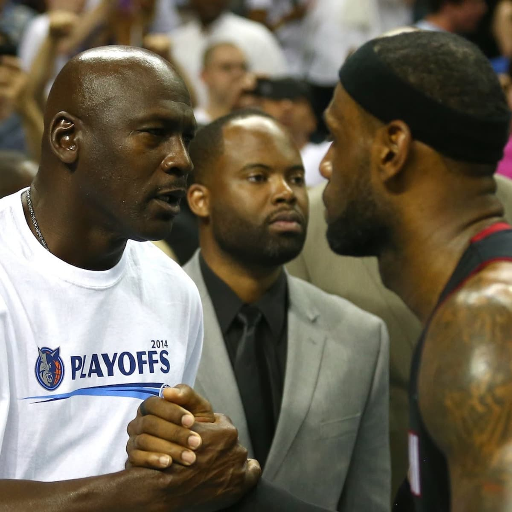

Legacy:
LeBron James' NBA career is nothing short of legendary, spanning over two decades of sustained excellence and dominance. From his first season in 2003 to his ongoing role as one of the league's top players, LeBron's impact on the NBA has been immense. ### Early Career (2003–2010) — Cleveland Cavaliers: LeBron was selected as the **#1 overall pick** in the **2003 NBA Draft** by the **Cleveland Cavaliers** straight out of high school. The expectations were sky-high, but he quickly lived up to the hype. In his rookie season, he was named **NBA Rookie of the Year** and became an instant star. Over the next few years, he grew into the face of the franchise and one of the best players in the league. By **2009 and 2010**, LeBron had already won **two MVPs** and led the Cavaliers to **the best record in the NBA** in both seasons. During this stretch, he became known for his all-around game — elite scoring, playmaking, rebounding, and defense. Despite his individual success, LeBron couldn’t get over the hump in the playoffs, with Cleveland falling short in the **2007 NBA Finals** (losing to the San Antonio Spurs in four games) and facing early playoff exits in the following years. In 2010, after a disappointing playoff loss to the Boston Celtics, LeBron made the controversial decision to leave Cleveland and join the **Miami Heat** in free agency. ### The Miami Heat Era (2010–2014): LeBron's decision to join the **Miami Heat** in 2010, alongside **Dwyane Wade** and **Chris Bosh**, was a defining moment in NBA history. The formation of the **"Big Three"** created one of the most formidable teams in the league. In Miami, LeBron's game reached new heights. He won **two NBA Championships** (2012, 2013), earning **Finals MVP** honors in both years. The Heat appeared in **four straight NBA Finals** from 2011 to 2014, with LeBron being named to the **All-NBA First Team** every year and winning **two more MVPs** (2012, 2013). While LeBron's time in Miami was largely successful, there was some criticism regarding his initial decision to leave Cleveland and the way the Heat's championship run began. However, he redeemed himself, cementing his legacy as one of the best players in the game. ### Return to Cleveland (2014–2018): In **2014**, LeBron made a highly anticipated return to the **Cleveland Cavaliers**, where he promised to bring a championship to his home state of Ohio. He immediately reshaped the team and led them to the **2015 NBA Finals**, where they lost to the Golden State Warriors. The 2016 Finals, however, would become one of the greatest moments in NBA history. LeBron led the Cavaliers to an improbable comeback from a 3-1 deficit in the series against the Warriors. The Cavs won the championship, with LeBron earning his third **Finals MVP**. His iconic block on **Andre Iguodala** and a clutch 3-pointer by **Kyrie Irving** helped secure Cleveland's first-ever NBA title and LeBron’s place in basketball history. Over the next few years, LeBron continued to dominate, making multiple All-NBA First Teams and keeping Cleveland competitive. However, in 2018, after another Finals loss to the Warriors, LeBron decided to leave Cleveland again, this time signing with the **Los Angeles Lakers**. ### Los Angeles Lakers (2018–Present): LeBron’s arrival in **Los Angeles** in 2018 marked the start of a new chapter in his career. The Lakers had been in a rebuilding phase, but LeBron’s leadership immediately turned the team into title contenders. In the 2020 season, after the NBA was disrupted by the COVID-19 pandemic, LeBron led the Lakers to their **17th NBA Championship**, tying the Lakers with the **Boston Celtics** for the most titles in NBA history. This victory also marked LeBron’s **fourth NBA title** and **fourth Finals MVP**. LeBron’s impact on the Lakers was immediate, and he continued to play at an elite level well into his late 30s. He helped the team remain competitive, even as they faced challenges with injuries and roster changes. As of 2025, he continues to perform at a high level, chasing personal milestones such as the **NBA's all-time scoring record** (which he surpassed in 2023) and continuing his quest for more championships. ### Career Highlights: - **4× NBA Champion** (2012, 2013, 2016, 2020) - **4× NBA MVP** (2009, 2010, 2012, 2013) - **4× NBA Finals MVP** (2012, 2013, 2016, 2020) - **17× NBA All-Star** (2005–2021) - **All-NBA First Team** selections nearly every year of his career - **All-NBA Defensive Team** multiple times - **NBA All-Time Scoring Leader** (as of 2023) - **2× Olympic Gold Medalist** (2008, 2012) ### Legacy: LeBron James is often compared to **Michael Jordan** as the greatest player of all time (GOAT). His legacy is marked by his consistent excellence, leadership, and ability to perform in the clutch. LeBron has played in **10 NBA Finals**, won **four NBA Championships**, and has been a dominant force in nearly every season he's been in the league. In addition to his basketball accomplishments, LeBron’s influence extends beyond the game. His ability to adapt his game as he’s aged, his off-court philanthropy, and his role as a leader in player empowerment have reshaped the modern NBA. Whether it's his scoring, playmaking, or defense, LeBron has maintained a level of dominance that has few equals in basketball history. His career is still ongoing, and there's no telling how much longer he will continue to play at an elite level, but regardless of what comes next, his place in NBA history is already firmly secured as one of the greatest to ever do it.
